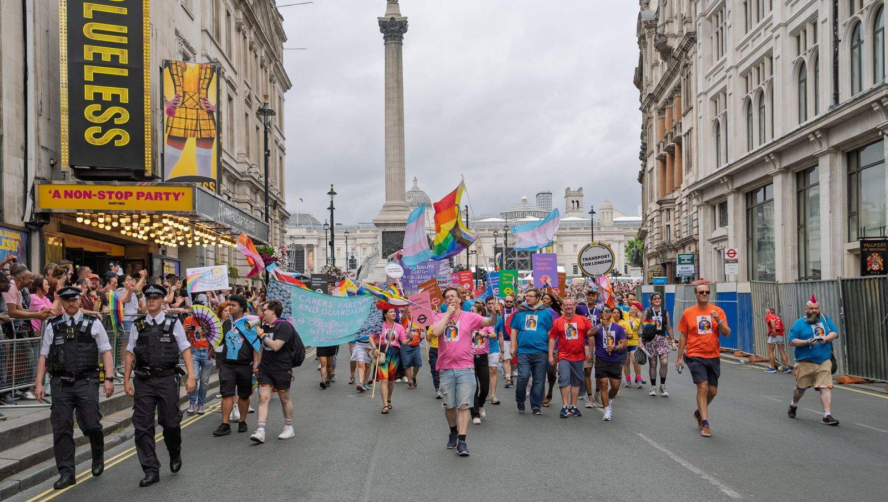

Festivals · Culture
Pride in London 2027
- Dates
- Location
- London, United Kingdom
- Format
- In-person
- Category
- Culture
- Industry
- Culture
- Official website
- https://prideinlondon.org/
About
Official homepage: returning 3rd July 2027. City-level pin.
Topics: Pride, LGBTQ+, parade.
No organiser attendance figure found on the official pages checked. Ranked by estimate (estimated size band 30,000+; this band is a research estimate, not an organiser figure).
Sources
- Official — https://prideinlondon.org/
Hotels
- Raffles London at The OWO — 5★ · The Old War Office, Whitehall, London SW1A, United Kingdom · 0.3 km from the venue · Price on request
- Park Plaza Victoria London — 4★ · 239-251 Vauxhall Bridge Road, London SW1V 1EQ, United Kingdom · 1.8 km from the venue · Price on request · Venue page
- Park Plaza Westminster Bridge London — 4★ · 200 Westminster Bridge Road, London, United Kingdom · 1.1 km from the venue · Price on request
- JW Marriott Grosvenor House London — 5★ · 90 Park Lane, Mayfair, London W1K 7TN, United Kingdom · 1.9 km from the venue · Price on request
- The Standard, London — 5★ · 10 Argyle Street, King's Cross, London WC1H, United Kingdom · 2.5 km from the venue · Price on request